사회조사분석사-2급 (2015-03-08 기출문제)
1과목: 조사방법론 I
1. 2차 자료에 대한 설명으로 옳은 것은?
- 조사자가 현재 수행중인 연구의 목적을 달성하기 위해 적절한 조사설계를 통하여 직접 수집한 자료이다.
- 현재 연구 중인 조사목적에 따른 정확도, 신뢰도, 타당도를 평가할 수 있다.
- 1차 자료에 비해 비용과 시간을 절약할 수 있다.
- 1차 자료에 비해 조사목적에 적합한 정보를 의사결정이 필요한 시기에 적절히 이용하기 쉽다.
(정답률: 74%)

2. 면접조사에서 질문의 일반적인 원칙과 가장 거리가 먼 것은?
- 조사대상자가 가능한 비공식적인 분위기에서 편안한 자세로 대답할 수 있어야 한다.
- 질문지에 있는 말 그대로 질문해야 한다.
- 조사대상자가 대답을 잘 하지 못할 경우 필요한 대답을 유도하거나 시사할 수 있다.
- 문항은 하나도 빠짐없이 물어야 한다.
(정답률: 70%)
3. 응답자들이 일반적으로 응답을 꺼리는 위협적인 질문을 처리하는 방법과 가장 거리가 먼 것은?
- 질문배열의 순서를 조정한다.
- 질문을 솔직하게 표현한다.
- 솔직한 응답의 필요성을 강조한다.
- 비밀과 익명성의 보장을 강조한다.
(정답률: 65%)
4. 우편조사를 실시하는 이유와 가장 거리가 먼 것은?
- 지리적으로 멀리 떨어져 있을 경우 조사비용을 줄일 수 있다.
- 쉽게 접근할 수 없는 대상을 조사할 수 있다.
- 응답자에게 익명성에 대한 확신을 줄 수 있다.
- 조사를 신속하게 완료할 수 있다.
(정답률: 78%)
5. 참여관찰의 단점과 가장 거리가 먼 것은?
- 객관성을 잃기 쉽다.
- 수집한 자료의 표준화가 어렵다.
- 자연스러운 상태를 관찰하기 어렵다.
- 집단상황에 익숙해지면 관찰대상을 놓칠 수 있다.
(정답률: 81%)
6. 질문지 작성 원칙과 가장 거리가 먼 것은?
- 질문은 짧을 수록 좋고 부연설명이나 단어의 중복 사용은 피해야 한다.
- 질문은 그 자체로서 의미가 명확히 전달될 수 있도록 구성하고 모호한 질문은 피해야 한다.
- 연구자의 가치관이나 의견이 반영된 문장을 사용한다.
- 복합적인 질문을 피하고, 두 개 이상의 질문을 하나로 묶지 말아야 한다.
(정답률: 81%)
7. 질적연구에 관한 설명과 가장 거리가 먼 것은?
- 질적연구에서는 어떤 현상에 대해 깊은 이해를 하고 주관적인 의미를 찾고자 한다.
- 질적연구는 개별 사례 과정과 결과의 의미, 사회적 맥락을 규명하고자 한다.
- 질적연구는 양적연구에 비해 대상자를 정확히 이해할 수 있는 더 나은 연구방법이다.
- 연구주제에 따라서는 질적연구와 양적연구를 동시에 진행할 수 있다.
(정답률: 56%)
8. 경험적 연구방법에 대한 설명으로 옳은 것은?
- 실험은 연구자가 독립변수와 종속변수 모두를 통제하는 연구방법이다.
- 심리상태를 파악하는데는 관찰에 의한 연구방법이 효과적이다.
- 내용분석은 어린이나 언어가 통하지 않는 조사대상자에 대한 연구방법으로 자주 사용된다.
- 대규모 모집단을 연구하는데는 질문지를 이용한 조사연구가 효과적이다.
(정답률: 55%)
9. 횡단연구와 종단연구에 관한 설명으로 틀린 것은?
- 횡단연구는 한 시점에서 이루어진 관찰을 통해 얻은 자료를 바탕으로 하는 연구이다.
- 종단연구는 일정 기간에 여러 번의 관찰을 통해 얻은 자료를 이용하는 연구이다.
- 종단연구에서 관찰은 일반 모집단으로부터 추출한 표본에 대해서는 이루어질 수 없다.
- 종단연구에는 코호트연구, 패널연구, 추세연구 등이 있다.
(정답률: 77%)
10. 다음 참여관찰 유형 중 가장 객관성을 유지하기 어려운 것은?
- 완전한 참여자
- 관찰자로서의 참여자
- 참여자로서의 관찰자
- 완전한 관찰자
(정답률: 73%)
11. 설문지작성의 일반적인 과정으로 가장 적합한 것은?
- 필요한 정보의 결정→개별 항목의 내용결정→질문 형태의 결정→질문순서의 결정→설문지의 완성
- 필요한 정보의 결정→질문형태의 결정→개별 항목의 내용결정→질문순서의 결정→설문지의 완성
- 개별항목의 내용결정→필요한 정보의 결정→질문형태의 결정→질문순서의 결정→설문지의 완성
- 개별항목의 내용결정→질문형태의 결정→질문순서의 결정→필요한 정보의 결정→문지의 완성
(정답률: 48%)
12. 두 변수들 사이에 인과관계가 존재하기 위해 필요한 조건과 가장 거리가 먼 것은?
- 원인은 시간적으로 결과를 선행한다.
- 두 변수는 경험적으로 서로 상호 관련되어 있다.
- 두 변수의 값은 각각 다른 변수의 값에 의하여 결정된다.
- 두 변수의 상관관계는 제 3의 변수에 의해 만들어진 것이 아니다.
(정답률: 69%)
13. 좋은 가설의 평가 기준에 대한 설명과 가장 거리가 먼 것은?
- 경험적으로 검증할 수 있어야 한다.
- 표현이 간단명료하고, 논리적으로 간결하여야 한다.
- 계량화할 수 있어야 한다.
- 동의반복적(tautological)이어야 한다.
(정답률: 79%)
14. 온라인조사에 대한 설명과 가장 거리가 먼 것은?
- 방문자조사나 특정 웹사이트를 우연히 찾은 사람을 대상으로 한 조사의 경우 표본의 대표성을 확보하기 용이하다.
- 전통적인 현장조사에 비해 짧은 기간에 적은 비용으로 조사를 실시할 수 있다.
- 표본의 대표성을 확보하기 어렵고, 특정 연령층이나 성별에 따른 편중된 응답이 도출될 위험성이 있다.
- 한 사람이 여러 차례 응답할 가능성을 차단해야 한다.
(정답률: 80%)
15. 집단조사법에 관한 설명과 가장 거리가 먼 것은?
- 조사가 간편하여 시간과 비용을 절약할 수 있다.
- 조사조건을 표본화하여 응답조건이 동등해진다.
- 응답자의 통제가 용이하여 타인의 영향을 배제할 수 있다.
- 응답자들을 동시에 직접 대화할 기회가 있어 질문에 대한 오해를 줄일 수 있다.
(정답률: 69%)
16. 연구문제가 학문적으로 뜻 있는 것이라고 할 때, 학문적 기준과 가장 거리가 먼 것은?
- 독창성을 가져야 한다.
- 이론적인 의의를 지녀야 한다.
- 경험적 검증가능성이 있어야 한다.
- 실천적 유관적합성(有關適合性)을 지녀야 한다.
(정답률: 63%)
17. 면접조사에 관한 설명과 가장 거리가 먼 것은?
- 면접 시 조사자는 질문 뿐 아니라 관찰도 할 수 있다.
- 같은 조건하에서 우편설문에 비하여 높은 응답률을 얻을 수 있다.
- 여러 명의 면접원을 고용하여 조사할 때는 이들을 조정하고 통제하는 것이 요구된다.
- 가구소득, 가정폭력, 성적 경향 등 민감한 사안의 조사 시 잘 활용된다.
(정답률: 78%)
18. 연구설계의 외적 타당성 저해요인과 가장 거리가 먼 것은?
- 검사에 대한 반작용 효과
- 자료수집의 상황 자체가 일으키는 반작용 효과
- 플라시보효과
- 성숙효과
(정답률: 58%)
19. 다음에서 설명하고 있는 것은?
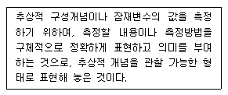
- 조작적 정의(operational definition)
- 구성적 정의(constitutive definition)
- 기술적 정의(descriptive definition)
- 가설 설정(hypothesis building)
(정답률: 75%)
20. 과학적 지식에 가장 가까운 것은?
- 절대적 진리
- 개연성이 높은 지식
- 전통에 의한 지식
- 전문가가 설명한 지식
(정답률: 62%)
21. 개인의 특성에서 집단이나 사회의 성격을 규명하거나 추론하고자 할 때 발생할 수 있는 오류는?
- 원자 오류(atomistic fallacy)
- 개인주의적 오류(individualistic fallacy)
- 생태학적 오류(ecological fallacy)
- 종단적 오류(logitudinal fallacy)
(정답률: 68%)
22. 다음 ( )안에 들어갈 변수를 순서대로 나열한 것은?
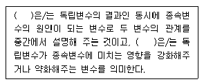
- 조절변수-억제변수
- 매개변수-구성변수
- 매개변수-조절변수
- 조절변수-매개변수
(정답률: 82%)
23. 어떤 질문을 하고 나면 다음 질문이 필요한지의 여부를 판별할 수 있도록 일련의 관련 질문들을 배열하는 질문 방식은?
- 유도질문
- 탐사질문
- 여과질문
- 열린질문
(정답률: 56%)
24. 전화조사의 장점과 가장 거리가 먼 것은?
- 비용을 줄일 수 있다.
- 높은 응답률을 보장할 수 있다.
- 응답자 추출, 질문, 응답 등이 자동 처리될 수 있다.
- 복잡한 문제들에 대한 의견을 파악하기 용이하다.
(정답률: 67%)
25. 일반적인 연구수행 절차로 가장 적절한 것은?
- 문제설정→문헌고찰→가설설정→연구설계→자료수집→분석 및 논의
- 문제설정→가설설정→문헌고찰→연구설계→자료수집→분석 및 논의
- 문제설정→문헌고찰→자료수집→가설설정→연구설계→분석 및 논의
- 문제설정→가설설정→자료수집→문헌고찰→연구설계→분석 및 논의
(정답률: 36%)
26. 다음에서 설명하고 있는 조사방법은?
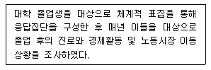
- 집단면접조사
- 파일럿 조사
- 델파이 조사
- 패널조사
(정답률: 75%)
27. 사전검사와 사후검사 간의 시간간격이 길 때 나타나기 쉬운 내적타당성 저해 요인은?
- 검사요인
- 조사대상의 차별적 선정
- 성숙요인
- 통계적 회귀
(정답률: 71%)
28. 기술적 조사(descriptive research)와 설명적 조사(explanatory research)에 관한 설명으로 틀린 것은?
- 기술적 조사는 물가조사와 국세조사 등 어떤 현상에 대한 탐구와 명백화가 주목적이다.
- 설명적 조사는 두 변수간의 시간적 선행성과는 무관하게 진행되는 경우가 많다.
- 기술적 조사는 관련 상황의 특성파악, 변수 간에 상관관계 파악 및 상황변화에 대한 각 변수간의 반응을 예측할 수 있다.
- 설명적 조사연구를 수행하기 위해서는 변수의 수가 둘 또는 그이상이 되는 경우가 많다.
(정답률: 65%)
29. 개념(concepts)의 정의와 가장 거리가 먼 것은?
- 일정한 관계사실에 대한 추상적인 표현
- 특정한 여러 현상들을 일반화함으로써 나타내는 추상적인 용어
- 현상을 예측 설명하고자 하는 명제, 이론의 전개에서 그 바탕을 이루는 역할
- 사실과 사실 간의 관계에 논리의 연관성을 부여하는 것
(정답률: 65%)
30. 사회조사의 실시과정에서 지켜져야 할 윤리적 기준과 가장 거리가 먼 것은?
- 연구자의 가치중립
- 연구대상자의 사전동의
- 연구대상자의 비밀보장
- 연구대상자의 복지보장
(정답률: 75%)
2과목: 조사방법론 II
31. 측정오차(error of measurement)에 관한 설명으로 틀린 것은?
- 비체계적 오차는 상호상쇄(self- compensation)되는 경향도 있다.
- 체계적 오차는 항상 일정한 방향으로 작용하는 편향(bias)이다.
- 비체계적 오차는 측정대상, 측정과정, 측정수단 등에 따라 일관성 없이 영향을 미침으로써 발생한다.
- 측정의 오차를 신뢰성 및 타당성과 관련지었을 때 신뢰성과 타당성은 정도의 개념이 아닌 존재개념이다.
(정답률: 67%)
32. 표본추출에 관한 설명으로 옳은 것은?
- 분석단위와 관찰단위는 항상 일치한다.
- 표본추출요소는 자료가 수집되는 대상의 단위이다.
- 통계치는 모집단의 특정변수가 갖고 있는 특성을 요약한 값이다.
- 표본추출단위는 표본이 실제 추출되는 연구대상 목록이다.
(정답률: 35%)
33. 측정도구의 타당도 평가방법에 대한 설명으로 틀린 것은?
- 한 측정치를 기준으로 다른 측정치와의 상관관계를 추정한다.
- 크론바하 알파값을 산출하여 문항상호간의 일관성을 측정한다.
- 내용타당도는 점수 또는 척도가 일반화하려고 하는 개념을 어느 정도 잘 반영해주는가를 의미한다.
- 개념타당도는 측정하고자 하는 개념이 실제로 적절하게 측정되었는가를 의미한다.
(정답률: 51%)
34. 전국 단위 여론조사를 하기 위해 16개 시도와 20대부터 60대 이상까지의 5개 연령층, 그리고 연령층에 따른 성별로 할당표집을 할 때 표본추출을 위한 할당범주는 몇 개인가?
- 10개
- 32개
- 80개
- 160개
(정답률: 68%)
35. 사회조사에서 비확률표본추출(nonprobability sampling)이 많이 사용되는 이유는?
- 표본추출오차가 적게 나타난다.
- 모집단에 대한 추정이 용이하다.
- 표본설계가 용이하고 시간과 비용을 절약할 수 있다.
- 모집단 본래의 특성과 차이가 나지 않는 결과를 얻을 수 있다.
(정답률: 67%)
36. 섭씨로 온도를 측정할 때 다음 설명 중 옳은 것은?
- 0℃는 온도가 없다는 것을 의미한다.
- 10℃와 20℃의 차이는 30℃와 40℃의 차이와 같다.
- 40℃는 20℃보다 두배 뜨겁다.
- 100℃는 100%로 뜨겁다는 것을 의미한다.
(정답률: 67%)
37. 다음 질문에서 사용한 척도는?
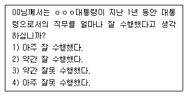
- 명목척도
- 서열척도
- 비율척도
- 등간척도
(정답률: 64%)
38. 척도에 관한 설명으로 틀린 것은?
- 척도는 계량화를 위한 측정도구이다.
- 척도의 표시는 반드시 숫자이어야한다.
- 연속성은 척도의 중요한 속성이다.
- 척도의 종류에는 명목척도, 서열척도, 등간척도, 비율척도가 있다.
(정답률: 67%)
39. 속성이 전혀 존재하지 않는 상태인 영점(0)이 존재하는 척도는?
- 서열척도
- 비율척도
- 명목척도
- 등간척도
(정답률: 73%)
40. 표집방법에 관한 설명으로 옳은 것은?
- 계통표집(systematic sampling) 에서는 표집요소들이 주기적 형태를 띠는 것이 바람직하다.
- 군집표집(cluster sampling)은 내부적으로 이질적인 군집을 추출하는 것이 유리하다.
- 일반적으로 군집표집은 층화표집보다 더욱 정확한 추정을 할 수 있다.
- 층화표집(stratified sampling)은 모집단을 내부적으로 이질적인 계층으로 층화하여 표본을 추출함으로 표본오차를 감소시킨다.
(정답률: 58%)
41. 신뢰도와 타당도 간의 관계에 관한 설명과 가장 거리가 먼 것은?
- 신뢰도가 높은 측정은 항상 타당도가 높다.
- 타당도가 높은 측정은 항상 신뢰도가 높다.
- 신뢰도가 낮은 측정은 항상 타당도가 낮다.
- 타당도가 낮다고 해서 반드시 신뢰도가 낮은 것은 아니다.
(정답률: 55%)
42. 구성체 타당도(construct validity)와 관련된 개념이 아닌 것은?
- 다중속성-다중측정 방법
- 요인분석
- 이론적 구성개념
- 예측적 타당도
(정답률: 52%)
43. 측정의 체계적 오류와 관련이 있는 것은?
- 통계적 회귀
- 생태학적 오류
- 환원주의적 오류
- 사회적 바람직성 편향
(정답률: 52%)
44. 변수에 관한 설명으로 가장 거리가 먼 것은?
- 변수는 연구대상의 경험적 속성을 나타내는 개념이다.
- 인과적 조사연구에서 독립변수란 종속변수의 원인으로 추정되는 변수이다.
- 외재적 변수는 독립변수와 종속변수와의 관계에 개입하면서 그 관계에 영향을 미칠 수 있는 제3의 변수이다.
- 잠재변수와 측정변수는 변수를 측정하는 척도의 유형에 따른 것이다.
(정답률: 56%)
45. 모든 요소의 총체로서 조사자가 표본을 통해 발견한 사실들을 토대로 하여 일반화하고자 하는 궁극적인 대상을 지칭하는 것은?
- 표본추출단위(sampling unit)
- 표본추출분포(sampling distribution)
- 표본추출 프레임(sampling frame)
- 모집단(population)
(정답률: 71%)
46. 우연표집(accidental sampling)에 관한 설명으로 옳은 것은?
- 모집단의 일련의 하위집단들을 층화시킨 다음 각 하위 집단에서 적절하게 표집하는 방법
- 모집단의 전체구성요소들을 파악한 후 개별요소들을 난수표로 만들어 표본을 추출하는 방법
- 표집대상이 되는 소수의 응답자를 찾아 면접을 하고 이들이 소개한 다른 사람들도 면접하는 방법
- 손쉽게 이용 가능한 대상만을 선택하여 표집하는 방법
(정답률: 52%)
47. 비확률표본추출방법에 관한 설명으로 틀린 것은?
- 표집오류를 확인하기 어렵다.
- 확률표본추출방법에 비해 시간과 비용이 많이 소요된다.
- 조사결과를 일반화하기 어렵다.
- 표본의 대표성을 확보하기 어렵다.
(정답률: 69%)
48. 조작적 정의(operational definition)에 관한 설명과 가장 거리가 먼 것은?
- 측정의 타당성(validity)과 관련이 있다.
- 적절한 조작적 정의는 정확한 측정의 전제 조건이다.
- 조작적 정의는 무작위로 기계적으로 이루어지기 때문에 논란의 여지가 없다.
- 측정을 위해 추상적인 개념을 보다 구체화하는 과정이라고 할 수 있다.
(정답률: 75%)
49. 신뢰도를 측정하는 방법이 아닌 것은?
- 재검사법
- 복수양식법
- 반분법
- 내용검사법
(정답률: 66%)
50. 일반적으로 표본추출방법들 간의 표집효과를 계산할 때 준거가 되는 표본추출방법은?
- 군집표집
- 계통표집
- 층화표집
- 단순무작위표집
(정답률: 63%)
51. 단순무작위표본추출번에 대한 설명으로 옳은 것은?
- 모집단의 평균에 가까운 요소가 평균에 멀리 떨어진 요소보다 표본으로 추출될 확률이 더 크다.
- 비확률표집방법이다.
- 난수표 또는 할당표를 이용할 수 있다.
- 표본이 모집단의 전체에서 추출된다.
(정답률: 47%)
52. 표본의 크기를 결정할 때에 고려하여야 할 사항과 가장 거리가 먼 것은?
- 모집단의 규모
- 표본추출방법
- 통계분석의 기법
- 연구자의 수
(정답률: 67%)
53. 모집단이 서로 상이한 특성으로 이루어져 있을 경우에 모집단을 유사한 특성으로 묶은 여러 부분집단에서 단순무작위추출법에 의하여 표본을 추출하는 방법은?
- 할당표본추출법
- 편의표본추출법
- 층화표본추출법
- 군집표본추출법
(정답률: 50%)
54. 직장인들을 대상으로 설문조사를 실시할 때, 다음 각 문항에 사용되는 측정 수준 (A) ~ (E)를 순서대로 옳게 나열한 것은? (단, 직무만족과 이직의도 문항은 리커트 척도로 제시함)
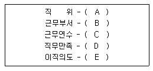
- 명목-명목-비율-비율-서열
- 서열-명목-비율-서열-서열
- 명목-서열-등간-비율-비율
- 서열-등간-등간-등간-비율
(정답률: 62%)
55. 지수(index)에 관한 설명으로 틀린 것은?(오류 신고가 접수된 문제입니다. 반드시 정답과 해설을 확인하시기 바랍니다.)
- 복합측정치로 여러 문항으로 구성된다.
- 추상적 개념을 단일수치로 표현할 수 있다.
- 지표(indicator)보다 변수의 속성을 파악하기 쉽다.
- 측정대상의 개별속성에 부여한 개별지표 점수의 합으로 표시할 수 있다.
(정답률: 25%)
56. 신뢰도를 높이기 위한 방법으로 가장 거리가 먼 것은?
- 측정도구의 모호성을 제거한다.
- 측정항목수를 줄인다.
- 조사대상자가 잘 모르는 내용은 측정하지 않는다.
- 측정의 일관성을 유지한다.
(정답률: 72%)
57. 아래의 질문에서 사용된 척도는?
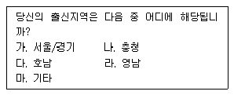
- 명목척도
- 서열척도
- 등간척도
- 비율척도
(정답률: 72%)
58. 다음 사례에서 성적은 어떤 변수에 해당되는가?
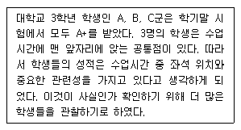
- 독립변수
- 통제변수
- 매개변수
- 종속변수
(정답률: 65%)
59. 다음 중 측정수준과 예가 잘못 짝지어진 것은?
- 명목측정 : 성별, 인종
- 서열측정 : 후보자 선호, 사회계층
- 등간측정 : 온도, IQ지수
- 비율측정 : 소득, 직업
(정답률: 66%)
60. 대학생의 라이프스타일을 조사하기 위해 전국에서 몇 개의 대학을 선정하고 이들로부터 다시 몇 개의 학과와 학년을 선정하여 해당되는 학생들을 모두 조사하는 표본추출방법은?
- 군집표본추출방법
- 층화표본추출방법
- 체계적추출방법
- 단순무작위표본추출방법
(정답률: 36%)
3과목: 사회통계
61. 5명의 남자와 7명의 여자로 구성된 그룹으로부터 2명의 남자와 3명의 여자로 구성되는 위원회를 조직하고자 한다. 위원회를 구성하는 방법은 몇 가지 인가?
- 300
- 350
- 400
- 450
(정답률: 57%)
62. 단순회귀모형에 대한 추정회귀직선이
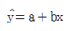
일 때, b의 값은?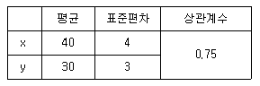
- 0.07
- 0.56
- 1.00
- 1.53
(정답률: 38%)
63. 다음 중 분산분석표에 나타나지 않는 것은?
- 제곱합
- 자유도
- F-값
- 표준편차
(정답률: 56%)
64. 어떤 모수에 대한 추정량이 표본의 크기가 커짐에 따라 확률적으로 모수에 수렴하는 성질은?
- 불편성
- 일치성
- 충분성
- 효율성
(정답률: 47%)
65. 공정한 동전 두 개를 던지는 시행을 1,200회 하여 두 개 모두 뒷면이 나온 횟수를 X라고 할 때, P(285≤X≤315)의 값을 구하면? (단, Z~N(0, 1)일 때, P(Z<1)=0.84)
- 0.35
- 0.68
- 0.95
- 0.99
(정답률: 45%)
66. 다음 내용에 대한 가설형태로 옳은 것은?
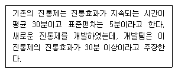
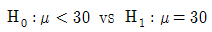
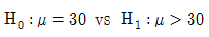
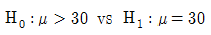
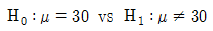
(정답률: 61%)
67. 어떤 제품의 제조과정에서 5%의 불량률이 발생했다. 이 제품들 중 100개를 임의로 추출하였을 때 여기에 포함된 불량품의 수를 확률변수 X라 하면, X의 평균과 분산은?
- 평균=5, 분산=4.75
- 평균=5, 분산=2.18
- 평균=6, 분산=5
- 평균=6, 분산=0.25
(정답률: 57%)
68. 일원분산분석에 대한 설명 중 틀린 것은?
- 제곱합들의 비를 이용하여 분석하므로 F분포를 이용하여 검정한다.
- 오차제곱합을 이용하므로 X2 분포를 이용하여 검정할 수도 있다.
- 세 개 이상 집단 간의 모평균을 비교하고자 할 때 사용한다.
- 총제곱합은 처리제곱합과 오차제곱합으로 분해된다.
(정답률: 37%)
69. 어느 지방선거에서 각 후보자의 지지도를 알아보기 위하여 120명을 표본으로 추출하여 다음과 같은 결과를 얻었다. 세 후보 간의 지지도가 같은 지를 검정하기 위한 검정통계량의 값은?
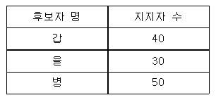
- 2
- 4
- 5
- 8
(정답률: 45%)
70. 독립변수가 3개인 중회귀분석 결과가 다음과 같다. 오차분산의 추정값은?
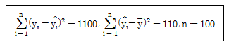
- 11.20
- 11.32
- 11.46
- 11.58
(정답률: 34%)
71. 측정단위가 서로 다른 두 집단의 산포를 비교하기 위한 측도로 가장 적당한 것은?
- 평균절대편차(mean absolute deviation)
- 사분위수 범위(interquartile range)
- 분산(variance)
- 변동계수(coefficient of variation)
(정답률: 53%)
72. 모평균에 대한 95% 신뢰구간 “표본평균±zα/2×표준오차”를 계산하기 위한zα/2 의 값은?
- 1.645
- 1.96
- 2.33
- 2.58
(정답률: 61%)
73. 2차원 교차표에서 행 변수의 범주 수는 5이고, 열 변수의 범주 수는 4개이다. 두 변수간의 독립성검정에 사용되는 검정통계량의 분포는?
- 자유도 9인 카이제곱 분포
- 자유도 12인 카이제곱 분포
- 자유도 9인 t 분포
- 자유도 12인 t 분포
(정답률: 44%)
74. X와 Y의 평균과 분산은 각각 E(X)=4, V(X)=8, E(Y)=10, V(Y)=32이고, E(XY)=28 이다. 2X+1과 -3Y+5 의 상관계수는?
- 0.75
- -0.75
- 0.67
- -0.67
(정답률: 28%)
75. 다음의 자료에 대한 설명으로 틀린 것은?
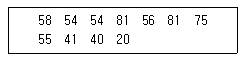
- 중앙값은 55이다.
- 표본평균은 중앙값보다 작다.
- 최빈값은 54와 81이다.
- 자료의 범위는 61 이다.
(정답률: 62%)
76. 어느 회사는 노조와 협의하여 오후의 중간 휴식시간을 20분으로 정하였다. 그런데 총무과장은 대부분의 종업원이 규정된 휴식시간보다 더 많은 시간을 쉬고 있다고 생각하고 있다. 이를 확인하기 위하여 전체 종업원 1,000명 중에서 25명을 조사한 결과 표본으로 추출된 종업원의 평균 휴식시간은 22분이고 표준편차는 3분으로 계산되었다. 유의수준 5%에서 총무과장의 의견에 대한 가설검정 결과로 옳은 것은? (단 t(0.⑤,24))=1711)
- 검정통계량 t<1.711이므로 귀무가설을 기각한다.
- 검정통계량 t<1.711이므로 귀무가설을 채택한다.
- 종업원의 실제 휴식시간은 규정시간 20분보다 더 길다고 할 수 있다.
- 종업원의 실제 휴식시간은 규정시간 20분보다 더 짧다고 할 수 있다.
(정답률: 45%)
77. 단순회귀모형에 대한 설명으로 틀린 것은?
- 독립변수는 오차없이 측정가능해야 한다.
- 종속변수는 측정오차를 수반하는 확률변수이다.
- 독립변수는 정규분포를 따른다.
- 종속변수의 측정오차들은 서로 독립적이다.
(정답률: 26%)
78. 다음 통계량 중 그 성격이 다른 것은?
- 평균
- 분산
- 최빈값
- 중앙값
(정답률: 62%)
79. 동물학자인 K박사는 개들이 어두운 곳에서 냄새를 더 잘 맡을 것이라는 생각을 하였고, 이를 입증하기 위해 다음과 같은 실험을 하였다. 같은 품종의 비슷한 나이의 개 20마리를 임의로 10마리씩 두 그룹으로 나눈 뒤 한 그룹은 밝은 곳에서, 다른 그룹은 어두운 곳에서 숨겨진 음식을 찾도록 하고, 그때 걸린 시간을 초단위로 측정하였다. 음식을 찾는데 걸리는 시간은 정규분포를 따르고 두 그룹의 분산은 모르지만 같다고 가정한다. μX밝은 곳에서 걸리는 평균시간, μY어두운 곳에서 걸리는 평균 시간이라 하자. K 박사의 생각이 옳은지를 유의수준 1%로 검정할 때, 다음 중 필요하지 않은 것은? (단, t(0.01,18)=2.552)
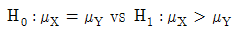
- 제2종 오류
- 공통분산 Sp2
- t(0.01,18)
(정답률: 43%)
80. 아파트의 평수 및 가족수가 난방비에 미치는 영향을 알아보기 위해 중회귀분석을 실시하여 다음의 결과를 얻었다. 분석 결과에 대한 설명으로 틀린 것은? (단, Y는 아파트 난방비(천원)이다.)
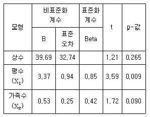
- 추정된 회귀식은
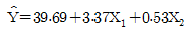
이다. - 유의수준 5%에서 종속변수 난방비에 유의한 영향을 주는 독립변수는 평수이다.
- 가족수가 주어질 때, 난방비는 아파트가 1평 커질 때 평균 3.37(천원) 증가한다.
- 아파트 평수가 30평이고 가족이 5명인 가구의 난방비는 122.44(천원)으로 예측된다.
(정답률: 49%)
81. 연속확률변수 X의 확률밀도함수를 f(x)라 할 때, 다음 설명 중 틀린 것은?
- f(x)≧0
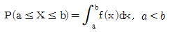
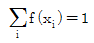
- a≤b 이면, P(X≤a)≤P(X≤b)
(정답률: 35%)
82. 버스전용차로를 유지해야 하는 것에 대해 찬성하는 사람의 비율을 조사하기 위하여 서울에 거주하는 성인 1,000명을 임의로 추출하여 조사한 결과 700명이 찬성한다고 응답하였다. 서울에 거주하는 성인 중 버스전용차로제에 찬성하는 사람의 비율의 추정치는?
- 0.4
- 0.5
- 0.6
- 0.7
(정답률: 67%)
83. 검정력(power)에 대한 설명으로 옳은 것은?
- 귀무가설이 참임에도 불구하고 이를 기각시킬 확률이다.
- 참인 귀무가설을 채택할 확률이다.
- 대립가설이 참일 때 귀무가설을 기각시킬 확률이다.
- 거짓인 귀무가설을 채택할 확률이다.
(정답률: 51%)
84. 다음 중 대푯값이 아닌 것은?
- 최빈값
- 기하평균
- 조화평균
- 분산
(정답률: 61%)
85. 어느 고등학교 1학년 학생의 신장은 평균이 168cm이고, 표준편차가 6cm인 정규분포를 따른다고 한다. 이 고등학교 1학년 학생 100명을 임의 추출할 때, 표본평균이 167cm이상 169cm 이하일 확률은? (단, P(Z≤1.67)=0.9525)
- 0.9⑤0
- 0.0475
- 0.8⑤0
- 0.7⑤0
(정답률: 41%)
86. 다음 중회귀모형에서 오차분산 σ2의 추정량은? (단, ei 는 잔차를 나타낸다.)
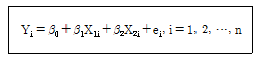
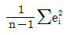
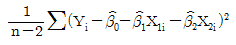
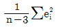
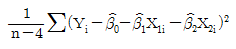
(정답률: 33%)
87. 강판을 생산하는 공정에서 25개의 제품을 임의로 추출하여 두께는 측정한 결과 표준편차가 5(mm)이었다. 모분산에 대한 95% 신뢰구간을 구하기 위해 필요한 값이 아닌 것은? (단, 강판의 두께는 정규분포를 따른다.)
- X2(24,0.025)
- X2(24, 0.975)
- X2(24, 0.95)
- 표본분산 25
(정답률: 37%)
88. 공정한 주사위 1개를 굴려 윗면에 나타난 수를 X라 할 때, X의 기댓값은?
- 3
- 3.5
- 6
- 2.5
(정답률: 50%)
89. 남, 여 두 집단의 연간 상여금의 평균과 표준편차는 각각(200만원, 30만원), (130만원, 20만원)이다. 두 집단의 산포를 변동(변이)계수를 통해 비교한 것으로 옳은 것은?
- 남자의 상여금 산포가 더 크다.
- 여자의 상여금 산포가 더 크다.
- 남녀의 상여금 산포가 같다.
- 비교할 수 없다.
(정답률: 46%)
90. 어떤 공장에서 두 대의 기계 A, B를 사용하여 부품을 생산하고 있다. 기계 A는 전체 생산량의 30%를 생산하며 기계 B는 전체 생산량의 70%를 생산한다. 기계 A의 불량률은 3%이고 기계 B의 불량률은 5%이다. 임의로 선택한 1개의 부품이 불량품일 때, 이 부품이 기계 A에서 생산되었을 확률은?
- 10%
- 20%
- 30%
- 40%
(정답률: 52%)
91. 모집단 {1, 2, 3, 4}로부터 무작위로 2개의 수를 복원으로 추출할 때, 표본평균의 기대값과 분산은?
- 기대값 : 2.5, 분산 : 0.884
- 기대값 : 1.25, 분산 : 0.625
- 기대값 : 2.5, 분산 : 0.625
- 기대값 : 1.25, 분산 : 0.884
(정답률: 45%)
92. 왜도가 0이고 첨도가 3인 분포의 형태는?
- 좌우 대칭인 분포
- 왼쪽으로 치우친 분포
- 오른쪽으로 치우친 분포
- 오른쪽으로 치우치고 뾰족한 모양의 분포
(정답률: 65%)
93. 주사위 1개와 동전 1개를 동시에 던질 때, A는 동전이 앞면일 사건, B는 주사위 눈의 수가 5일 사건으로 정의하자. 이 때 P(A|B)의 값은?
- 1/6
- 1/2
- 1/12
- 5/6
(정답률: 45%)
94. 어느 질병에 대한 세 가지 치료약의 효과를 비교하기 위한 일원분산분석 모형
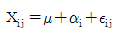
에서 오차항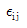
에 대한 가정으로 적절하지 않은 것은?- 정규분포를 따른다.
- 서로 독립이다.
- 분산은 i 에 관계없이 일정하다.
- 시계열 모형을 따른다.
(정답률: 48%)
95. 평균이 μ이고 분산이 σ2=9인 정규모집단으로부터 추출한 크기 100인 확률표본의 표본평균
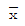
를 이용하여 가설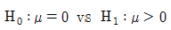
을 유의수준 0.⑤에서 검정하는 경우 기각역이 Z≥1.645 이다. 이때 검정통계량 Z에 해당하는 것은? (단, P(Z>1.645)=0.⑤)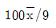
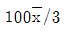
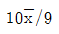
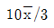
(정답률: 37%)
96. 다음 결과를 이용하여 X와 Y의 표본상관계수 r을 계산하면? (단,
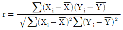
)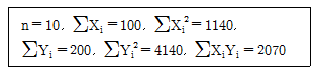
- 0.35
- 0.40
- 0.45
- 0.50
(정답률: 31%)
97. A, B, C 세 공법에 대하여 다음의 자료를 얻었다. 일원분산분석을 통하여 위의 세 가지 공법사이에 유의한 차이가 있는지 검정하고자 할 때, 처리제곱합의 자유도는?
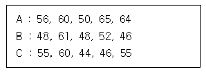
- 1
- 2
- 3
- 4
(정답률: 50%)
98. 카이제곱분포에 대한 설명으로 틀린 것은?
- 자유도가 k인 카이제곱분포의 평균은 k이고, 분산은 2k이다.
- 카이제곱분포의 확률밀도함수는 오른쪽으로 치우쳐있고, 왼쪽으로 긴 꼬리를 갖는다.
- V1, V2가 서로 독립이며 각각 자유도가 k1, k2인 카이제곱분포를 따를 때 V1+V2는 자유도가 k1+k2 인 카이제곱분포를 따른다.
- Z1∙∙∙Zk가 서로 독립이며 각각 표준정규분포를 따르는 확률변수일 때 Z12+∙∙∙+Zk2은 자유도가 k인 카이제곱분포를 따른다.
(정답률: 39%)
99. 단순회귀분석을 수행한 결과 다음의 결과를 얻었다. 결정계수 R2값과 기울기에 대한 가설 H0 : β1=0 에 대한 유의수준 5%의 검정결과로 옳은 것은? (단, α=0.⑤, t(0.025, 3)=3.182,
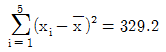
)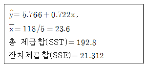
- R2=0.889, 기울기를 0 이라 할 수 없다.
- R2=0.551, 기울기를 0 이라 할 수 없다.
- R2=0.889, 기울기를 0 이라 할 수 있다.
- R2=0.551 기울기를 0 이라 할 수 있다.
(정답률: 35%)
100. 통계적 가설검정에서 귀무가설이 참일 때 귀무가설을 기각하는 오류를 무엇이라 하는가?
- 제1종 오류
- 제2종 오류
- p-값
- 검정력
(정답률: 60%)